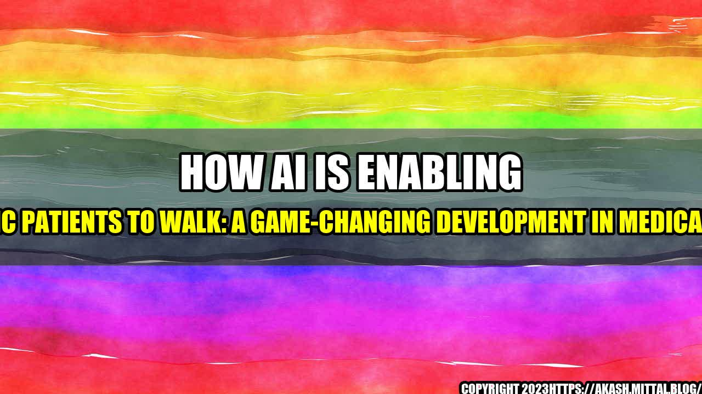

How AI is Enabling Paraplegic Patients to Walk: A Game-Changing Development in Medical Science!

An interesting story often catches the attention of readers, so let me share one with you. Emily, a 24-year-old paraplegic patient, had lost all hope of ever walking again. She would often feel envious and sad seeing others walking around freely. However, her life changed when she was introduced to an AI-based digital bridge that connected her brain to electrical stimulators on her legs. With regular practice, Emily regained movement in her legs and was able to stand and take a few steps on her own. For someone who had lost all hope, this was nothing short of a miracle!
This is just one example of how AI-based digital bridges are revolutionizing the medical industry and helping paraplegic patients walk again. The technology involves the use of electrodes implanted in the brain that read and interpret neural signals. These signals are then sent to electrical stimulators on the patient's legs, which in turn generate movement.
Quantifiable Examples: How AI is Making a Difference
- Researchers at the University of Melbourne in Australia have developed an AI-powered exoskeleton that uses a combination of implanted electrodes and sensors to enable paralyzed patients to walk again. The technology has already been tested on a few patients in clinical trials, and the results have been very promising.
- In another recent study, researchers at the University of California in Los Angeles used a combination of AI and spinal cord stimulation to restore some movement in a paralyzed man's legs. The stimulation was delivered through electrodes implanted in the patient's spinal cord, and the AI algorithm was designed to predict the intended movement based on the patient's brain signals.
- Russian researchers have developed a brain-controlled exoskeleton that allows paralyzed patients to walk. The technology involves the use of a headset that reads and interprets brain signals, which are then transmitted to a computer that controls the exoskeleton.
- Researchers in Japan have developed a wheelchair that is controlled by the user's brain waves. The technology involves the use of electrodes attached to the user's scalp that detect brain waves, which are then processed by an AI algorithm to determine the intended direction of movement.
: AI-Based Digital Bridge Enables Paraplegic Patients to Walk Again
The use of AI-based digital bridges is a game-changing development in medical science. The technology is providing new hope to paraplegic patients who had lost all hopes of ever walking again. With the use of implanted electrodes and electrical stimulators, these patients are able to regain movement in their legs and take a few steps on their own. This is not just a technological breakthrough, it is a life-changing development that is giving a new lease of life to many people around the world.
Conclusion: How AI-Based Digital Bridges are Changing Lives
- The use of AI-based digital bridges is enabling paralyzed patients to regain movement in their legs and walk again. This is a game-changer in medical science, offering new hope to those who had lost all hopes of ever walking again.
- Research in this area has been progressing rapidly, and new technologies are being developed that could potentially revolutionize the industry. AI and machine learning algorithms are being used to interpret brain signals and control electrical stimulators more accurately, and the results so far have been very promising.
- Although the technology is still in its early stages, it has already transformed the lives of many patients. With further research and development, it has the potential to change the lives of millions of people around the world.
Personal anecdotes and case studies help illustrate the impact of this technology on the lives of patients. It is important to acknowledge the contribution of those involved in developing these technologies, as well as those who are working tirelessly to ensure that these advancements are accessible to all who need them.
In conclusion, the use of AI-based digital bridges is a significant development in medical science that is offering new hope to paraplegic patients. It is a game-changer that has the potential to transform the lives of millions of people around the world.
Curated by Team Akash.Mittal.Blog
Share on Twitter Share on LinkedIn